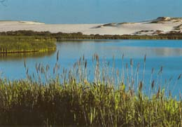

Truro
|
Visit Highland Light
and bicycle the short Head of the Meadow trail. Walk in the
dunes at Pilgrim Lake. Explore the cranberry bog trail and
Ballston Beach.
See the Truro
overview and
Chamber of Commerce sites, and check out Truro
restaurants
|

Pilgrim Lake and Dunes |
 Pilgrim
Lake Dunes Pilgrim
Lake Dunes
The National Seashore
leads a 2-mile hike into the unusual parabolic dunes at Pilgrim
Lake.
 Head
of the Meadow Bicycle Trail Head
of the Meadow Bicycle Trail
This 2-mile paved trail begins near pilgrim Lake
at the end of unpaved High Head Rd, and takes you to Head of the
Meadow Beach. The Short Bike
Rides book describes a Truro route that takes in Highland Light
along with the bike trail.
 Cranberry
Bog Trail and Ballston Beach Cranberry
Bog Trail and Ballston Beach
At the end of North Pamet Road, off Rte 6, is a little-known
walking trail through an old cranberry bog. When I did this walk,
the bog was full of frogs. Look for the sign at the edge of the
parking lot. Starting from the same spot, the National
Seashore offers an evening of stories around the campfire at
Ballston Beach.
 Highland
Light Highland
Light
The Cape Cod Lighthouse, known to locals as Highland
Light, is often the first sign of land for boats crossing the
Atlantic to Boston. The lighthouse was recently moved back from
the edge of the eroding cliffs. For a nice photo of the Light, see
Jay Pulli' s
web site. You also can read a description
of the move from the moving company. The lighthouse is now operating
and the Highland Light Preservation Society offers tours of the
lighthouse every day during the summer. National
Seashore leads a 1-mile walk beginning at the lighthouse, describing
"Life at the Truro Highlands" a century ago. Take Rte
6 to the Cape Cod (Highland) Light signs.
 Canoe
Explorations Canoe
Explorations
Wellfleet Bay Wildlife
Sanctuary leads some canoe trips exploring Pilgrim Lake and
the Pamet River.
|